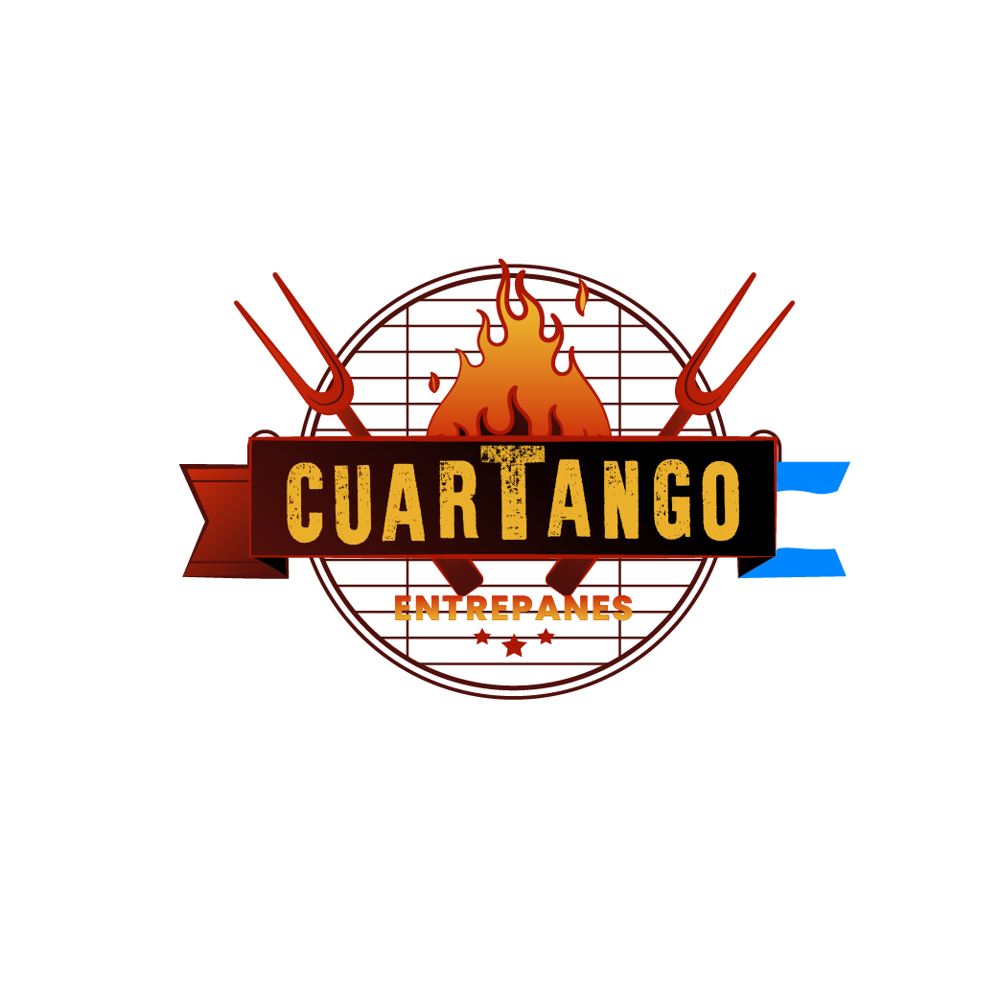

Cuartango Argentina: restaurante argentino en Las Palmas, Gran Canaria, y próxima apertura en Vecindario

Donde la carne es un arte y el fuego, tradición
Un pedacito de Argentina en Gran Canaria
En Cuartango cocinamos como en casa, en Argentina: producto de calidad, recetas de siempre y el fuego como protagonista. Entrepanes artesanos, empanadas caseras y carne de primera, servidos con la hospitalidad de quien te recibe en su propia mesa. Tenemos nuestro local de Las Palmas y pronto abriremos otro en Vecindario, y también llevamos nuestra cocina a tus celebraciones.
Elige tu local
Pasa el ratón o toca un local para descubrirlo.
Catering a domicilio: tu celebración, a la parrilla
Llevamos la parrilla argentina a tu boda, cumpleaños o reunión: parrillero profesional, montaje en el lugar, camareros y menús completos desde 40 € por persona. Cada evento se diseña a medida, con el mismo cuidado que ponemos en nuestras mesas. Cuéntanos tu celebración y te preparamos un presupuesto sin compromiso.
Nuestra forma de cocinar
Leña, brasa y parrilleros que dominan el arte del asado. Del fuego al corte a cuchillo y de ahí a tu mesa: así cocinamos en Cuartango.
Festeja tu evento en nuestros locales
Cumpleaños, cenas con amigos, reuniones familiares y comidas de empresa en nuestro local de Las Palmas. Cuéntanos tu idea y armamos la celebración a tu medida.
De la brasa a la bandeja
Desliza el control para comparar.
Momentos Cuartango
Desliza para ver más. Toca una imagen para verla en grande.
Del fuego al postre
Desliza para ver más. Toca una imagen para verla en grande.
Lo que dicen
Preguntas frecuentes
¿Qué es Cuartango Argentina?
Cuartango Argentina es un restaurante argentino en Gran Canaria. Tiene un local abierto en Las Palmas y un nuevo local de próxima apertura en Vecindario: parrilla argentina en Las Palmas de Gran Canaria y milanesas, entrepanes y sándwich de vacío al disco en Vecindario. También hacemos catering argentino con parrillero para bodas, cumpleaños y eventos.
¿Dónde están los locales de Cuartango Argentina?
En Las Palmas de Gran Canaria, en C. José Franchy Roca 9, 35007 Las Palmas de Gran Canaria. El nuevo local de Vecindario abrirá próximamente, en C. Granada 22, Balos, Vecindario.
¿Qué se puede comer en Cuartango Argentina?
En Las Palmas: parrillada, entraña, vacío, costilla, entrecot, mollejas y morcilla a la parrilla, empanadas, provolone, milanesas, entrepanes y ensaladas. En Vecindario: milanesas (napolitana, fugazzeta, a caballo, criolla, caprese y La Porteña), entrepanes (Milonga, Cuarteto, Tango, Folklore y Cumbia), sándwich de vacío al disco, empanadas y provolones. De postre: chocotorta, budín de pan con dulce de leche y alfajor artesanal.
¿Hay parrilla argentina en los dos locales?
La parrilla está en el local de Las Palmas. El local de Vecindario no tiene parrilla: allí la especialidad son las milanesas, los entrepanes y el sándwich de vacío al disco.
¿Se puede reservar mesa?
Sí. Puedes reservar online eligiendo local, día, hora y número de personas, y recibes la confirmación por correo. Hasta 10 personas por internet; para grupos mayores, escríbenos a info@cuartango.com.
¿Hacéis catering argentino a domicilio en Gran Canaria?
Sí. Llevamos la parrilla a tu celebración, con parrillero profesional, montaje en el lugar y camareros. Menús desde 40 € por persona, para un mínimo de 25 comensales. Pide tu presupuesto.
¿Se puede pedir para llevar o a domicilio?
Sí. Hacemos delivery y también para llevar desde el local de Las Palmas. El nuevo local de Vecindario también tendrá delivery cuando abra.
¿Se puede celebrar un cumpleaños o un evento en Cuartango Argentina?
Sí. Puedes festejar tu cumpleaños, una reunión o una cena de empresa en nuestro local de Las Palmas (y pronto en Vecindario): cuéntanos el local, la fecha y cuántos sois y te respondemos con una propuesta a medida.